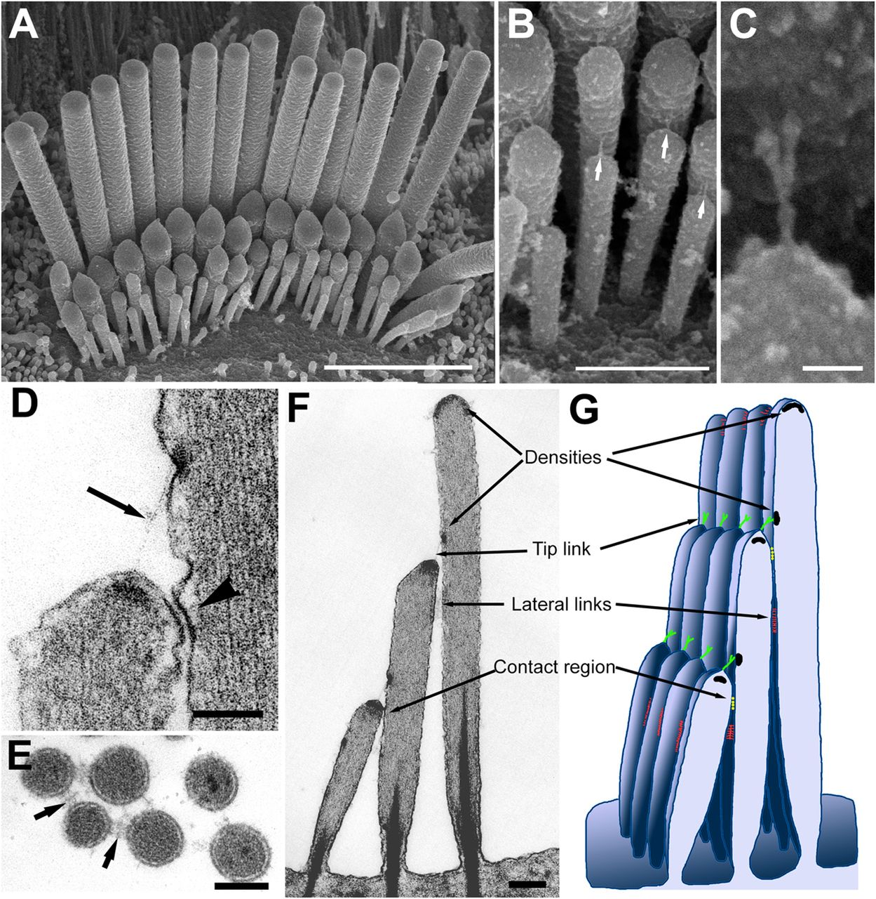
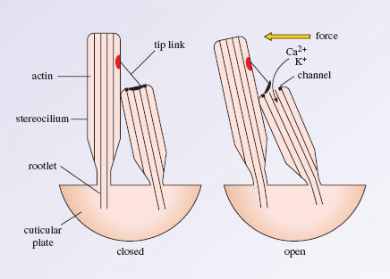
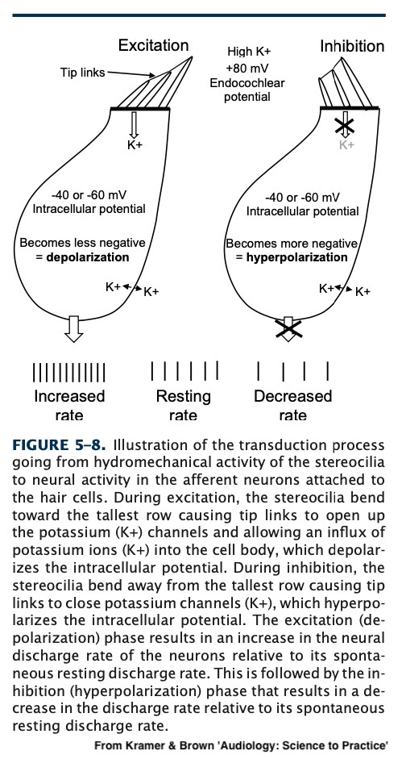
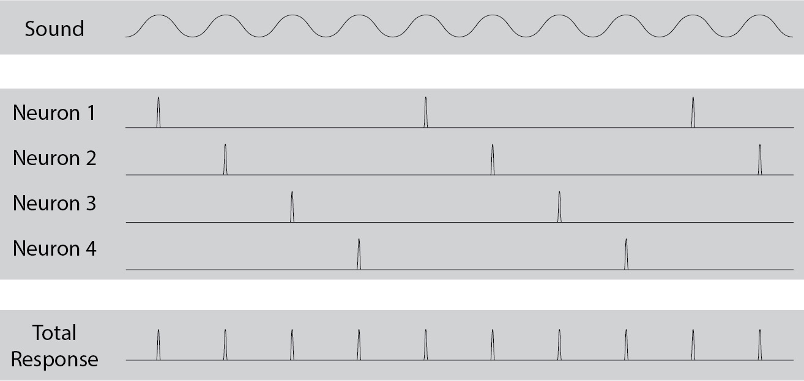
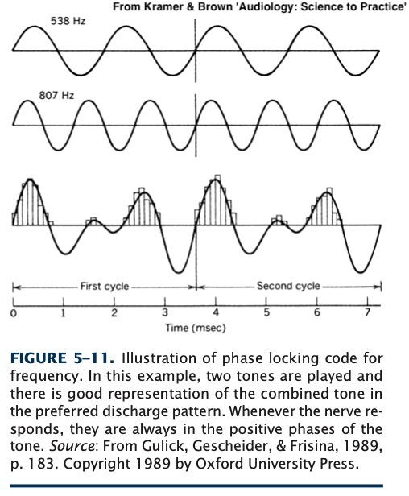
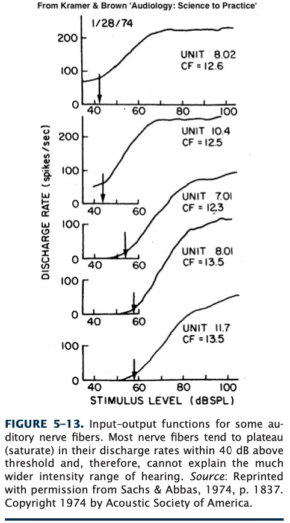
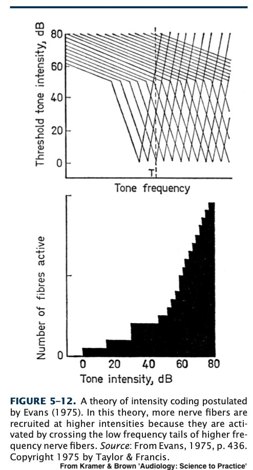

### Enjoy this banger of a song <audio controls src="phonmedia/500hz_3mins.wav"></audio> --- # The Physiology of the IHCs and Nerve Coding Will Styler - LIGN 113 --- ### Today, we'll zoom in on the inner hair cells - They are the final transducer between mechanical movement and nerve impulses - They are **really** cool - Our question today is very simple: **How do you turn mechanical movements into nerve firings?** - ... and what do those firings look like? --- ### Today's Plan - What parts of the IHCs are sensitive to movement? - How does that motion trigger a nerve firing? - How do those nerve firings represent frequency? - How do those nerve firings represent amplitude? --- ### Review <img class="r-stretch" src="hearing/cochlea_cross.jpg"> --- <img class="r-stretch" src="hearing/corti_crosssection.jpg"> --- ### When the basilar membrane moves... - The whole organ of corti moves - The tectorial membrane moves indepedently - The OHCs do their amplification and tuning thing - Pulling and pushing on the tectorial membrane --- ## What part of the IHCs is sensitive to basilar membrane motion? --- ### How do the IHCs detect this? - Stereocilia! --- <img class="r-stretch" src="hearing/corti_top.jpg"> --- <img class="r-stretch" src="hearing/hair_ihc.jpg"> --- <img class="r-stretch" src="hearing/hair_excitation.jpg"> --- ### When the stereocilia bend, the IHCs start to fire - Either fluid movement or the tectorial membrane can bend the stereocilia - Maybe both at once! --- ## How does that motion trigger a nerve firing? --- ### Stepping Back <img class="r-stretch" src="hearing/cochlea_cross.jpg"> --- ### The different fluids here are crucial - Endolymph in the Scala Media has a positive potential (+80mV of K+) - There is an abundance of potassium ions in endolymph - Perilymph in the other two scalae has a neutral potential - There are relatively few potassium ions in perilymph - This sets up the **endocochlear potential** - This potential is maintained by the stria vascularis --- ### The IHCs occur at the border between these fluids - The tips and stereocilia are in +80mV of K+ Ions - The base of the cell is in ~0mV of K+ Ions --- <img class="r-stretch" src="hearing/corti_crosssection.jpg"> --- ### The cell increases this potential! - Ion pump structures in the cell wall remove K+ ions - This results in a **negative** intracellular potential - This is also known as *polarization* --- ### So, the inside of the cell has a negative potential - ... and the stereocilia are swimming in positive ions! - This is a potential solution to our problem!! --- ### The Stereocilia are the K+ Gateway to the cell! <img class="r-stretch" src="hearing/hair_ihc.jpg"> --- ### The stereocilia are elaborately linked  Sourced from <https://jcs.biologists.org/content/126/8/1721> --- ### These links are deflected by hair motion - ... and when the links deflect, ion channels open!  --- ### When the ion channels open, the cell *depolarizes*  --- ### This triggers the nerves to increase their firing rate! - Boom! Transduction! --- ### Even this is a bit of a simplification - [Lots of work is ongoing to understand the precise mechanisms](https://www.nature.com/articles/s41586-022-05314-8) --- ### When the excitation (movement) stops... - The tip links again block the ion channels - The cell repolarizes - The nerves fire at a much decreased rate --- ## So, in summary... - The **endocochlear potential** is built up and constant - The Inner Hair Cells have a negative charge - The Endolymph has a positive charge - When the stereocilia are deflected by sound, they let in positive ions and depolarize the cell - The Depolarization triggers increased nerve firings - This stops when the stereocilia return to rest --- ### So, we know how IHCs detect movement - This is the same method by which OHCs do their thing! - ... and what triggers nerves to fire --- ### "How are the IHC nerve firings coding acoustic information?!" --- ### Useful Acoustical Information - Amplitude? - Period? - Frequency? - Wavelength? - Phase? --- ### If the world made sense... - "Frequency is coded by how often the neurons fire" - "If the sound is 3500 Hz, then the neuron fires 3500 times per second" - "Amplitude is coded by how strongly the neurons fire" - "Stronger sounds make for stronger discharges" - **This is super wrong** --- ### The Problem - These nerve impulses are limited to firing at ~1000 Hz on the high end - ... Yet we're hearing up to 20,000Hz - Neurons have a binary firing pattern - "On or Off", no gradience --- ## Frequency Coding in the Auditory Nerve --- ### There are two theories of frequency coding - Place theory - Frequency theory --- ### Place theory - "Uh... doesn't tonotopic organization give us this for free?" <img class="r-stretch" src="hearing/basilar_tonotopic.jpg"> --- ### It does! - We know where on the BM is sensitive to what frequencies - We also know where on the BM each signal is coming from - So, boom, frequency! --- ### Problems with the Place Theory - Psychoacoustic Evidence! - Evidence from Disordered Hearing - Evidence from "Missing Fundamental" - *Place theory is mostly problematic in low frequencies!* --- ### The Temporal Theory - "We use neural firing patterns to code frequency **directly**, at every place along the BM" - "The firing patterns themselves code frequency" - Also called the 'Frequency theory' --- ### We can't do this directly - Recall the maximum firing rate is ~1,000 Hz - We need another method! --- ### Volley Theory - "Even if one neuron can't encode every peak, all of them can! Go team!"  --- <img class="r-stretch" src="hearing/nerve_interspike_intervals.jpg"> --- ### Phase Locking - "Neurons tend to fire during the positive phase of the sound"  --- ### Problems with the temporal theory - ~1000Hz theoretical firing rate limit - Phase locking stops around 5kHz - *High frequencies are tough for frequency theory!* --- <img class="r-stretch" src="humorimg/whynotboth.jpg"> --- ### Place Theory and Temporal Theory are complementary - Place theory works well in mid-to-high frequencies - Temporal theory works well in low frequencies! - *It seems likely that we're using both methods to some extent!* --- ### So how are we likely coding frequency in our perception of sound? - By noting where on the BM this sound is triggering responses - ... and... - By looking at the pattern of firings to detect periodicity! --- ## Amplitude Coding in the auditory nerve --- ### How do we make binary responses code the full range of intensity we hear? --- ### One easy theory - "Well, the neuron fires more often when it's being stimulated more" - But this has major problems! --- ### Problems with firing rate - Nasty interaction with frequency-of-firing-based frequency perception! - Nerve firing rates plateau quickly! ---  --- ### Two other options - Recruitment - Differential Sensitivity --- ### Recruitment! - As the signal gets stronger, more of the BM moves - This recruits more neurons to fire ---  --- ### Differential Sensitivity - The last theory assumes that *all neurons respond alike* - That doesn't have to be true! <img class="r-stretch" src="hearing/nerve_differentialsensitivity.jpg"> --- ### If neurons differ in sensitivity, we can get a broader range <img class="r-stretch" src="hearing/nerve_combined_sensitivity.jpg"> --- ### So, Amplitude is likely coded by increased numbers of neurons firing - Both because more of the BM is moving - ... and because some neurons are tuned for different amplitudes --- ### We're not so sure about nerve encoding --- ### This is a special kind of difficult to study - Nerve response within the temporal bone - We're nowhere near sure about these mechanisms - ... but this is our best guess! --- ### Wrapping up - The BM moves due to the hydromechanical movements associated with sound entering the cochlea - The IHCs depolarize when the stereocilia are disturbed - This causes the neurons to start firing - We fire in specific patterns to signal differences in frequency - ... and more neurons fire when there's greater power - We think! --- ### Next time - Balanced coverage of the Vestibular System --- <huge>Thank you!</huge>